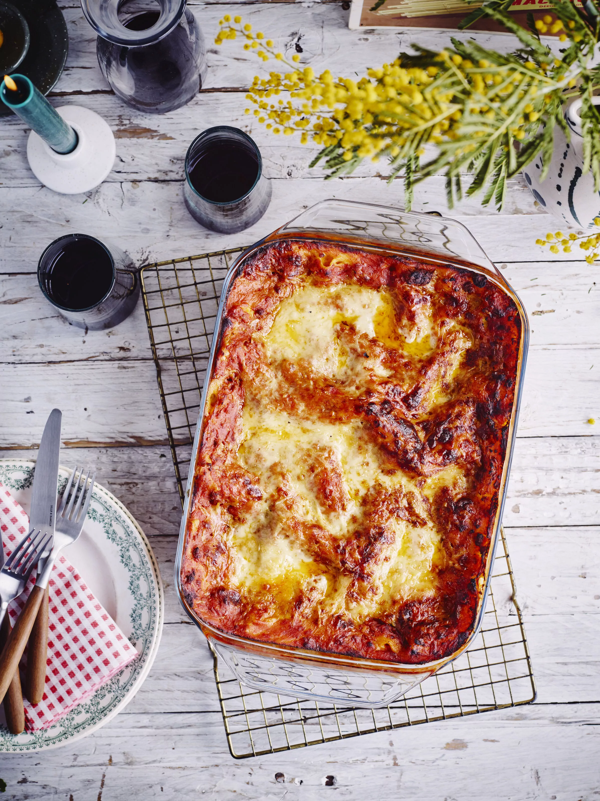

Lasagna

Lasagna Bolognese
This lasagna needs a firm rich Bolognese and a creamy cheese sauce and then you can enjoy the most delicious homemade lasagna
Ingredients
- 1 knob of butter
- 2 onions
- 4 cloves of garlic
- Thyme
- laurel
- 500 g minced pork
- 500 ground beef
- 1 tsp dried oregano
- Pepper
- Salty
- 3 large carrots
- 5 stalks celery
- 1 large red pointed bell pepper
- 400 ml red wine
- 1400 ml passata
- 140 g double concentrated tomato paste
- 2 tbsp balsamic cream
- 1 pack of lasagna sheets
- 4 slices of ham
Bechamel sauce:
- 30 g butter
- 40 g flour
- 600 ml cold milk
- Pezo
- Nutmeg
- 300 g grated cheese
Steps
- Chop the onion, sauté in the butter, grate the garlic, add thyme, bay leaf and oregano.
- Let it simmer for 5 minutes while stirring.
- Let it simmer for 5 minutes while stirring.
- Add the minced meat and crush into fine pieces in the mass.
- Bake well for 5 minutes.
- Chop the pointed pepper very finely and add it.
- Peel and finely chop the celery and carrots, add together with the wine, passata, tomato purée and balsamic cream.
- Season with salt and pepper, bring to a boil and reduce the heat, simmer for 1 hour under a lid, stirring occasionally.
Bechamel:
- Melt the butter in a saucepan, once it foams, add the flour in 1 go and fry for 3 minutes.
- Add half of the milk and stir vigorously to remove all lumps, then add the rest of the milk and let it come to a boil. Mix in half of the cheese, season with salt and pepper and grate in some nutmeg if you're a fan of that, I don't.
- Take a large baking dish, spread 1/3 layer of the bolognaise sauce in it.
- Cover completely with lasagna sheets, place the 4 slices of ham on the bone, cover with 1/3 of the béchamel sauce, fill with lasagna sheets, and start again until everything is evenly distributed, finish with a layer of bolognaise and sprinkle the rest of the grated cheese about.
- Bake for 35' in a preheated oven at 180°.